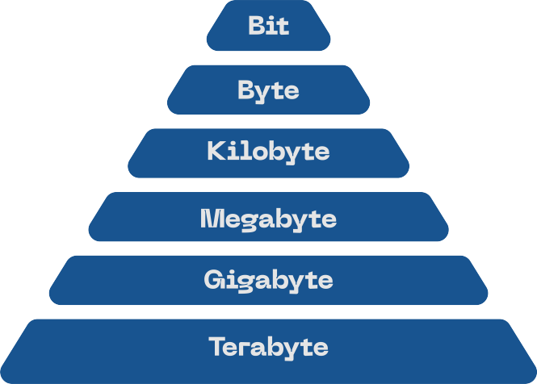

RAM, Random Access Memory, är den del i datorer och annan elektronik som fungerar såsom ett korttidsminne på människor, dvs det man tänker på just nu. Den här delen är en av de viktigaste på datorer eftersom datorer speciellt behöver det för att ens starta. För att hålla mig nära analogin så är det som att ha en människa utan korttidsminne.
Det första ordet i akronymet, Random, är viktigt eftersom det syftar på dess förmåga att fungera genom att kunna komma åt vilken del av minnet som helst utan att behöva läsa in den tidigare gruppen av bits. Den här förmågan gör ram relativt snabbt sådan hårdvara som SSD och HDD. Till skillnad från lagringen i SSD och HDD som också mäts i antal GB de har så är minnet en mätning av hur mycket datorn kan “tänka” på samma gång, medans lagringen är mer av ett långtidsminne där informationen sparas i längre tid.
I och med inhandling av RAM minne så kan man nu ofta se tex GB som innebär hur mycket minne det är i gigabyte dvs 1024^3 * 8 bit, se bild. I datorer och annan hårdvara just nu så behövs olika mängder beroende på vad som ska göras med datorn eller den andra elektroniken. Men ifall man bara behöver ram minne för att köra elektronik såsom en skrivare så kommer det inte behöva lika mycket som tex grafiskt krävande arbete av datorer.
